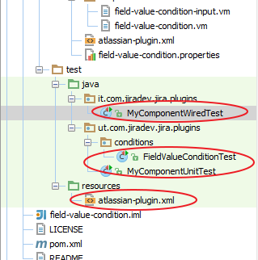

Workflow Condition Plugin
Requirement: Write a workflow condition to check if a selected custom field has the value set to Yes.
-
Create a plugin skeleton.
- groupId: com.jiradev.jira.plugins
- artifactId: field-value-condition
- version: 1.0
-
Cleanup the atlassian-plugin.xml. Then create a jira plugin module.
- Select option 32 for workflow condition
- Enter class name: FieldValueCondition
- Enter package name: com.jiradev.jira.plugins.conditions
- Show advanced setup: N
- Add another plugin module: N
-
Take a look at the atlassian-plugin.xml. Delete the test cases generated by the SDK.
We will not be covering test cases in these tutorials. I will be adding a separate series of tutorials for testing in the near future.
Your project now contains 4 new files. We will be modifying each of these files to implement our logic and display content we want to display.
- FieldValueCondition.java
- FieldValueConditionFactory.java
- field-value-condition-input.vm
- field-value-condition-view.vm
FieldValueConditionFactory.java
In this class, we will basically write code to setup the workflow condition. The code we write here will pass all the custom fields to the view where we choose the custom field and the value required for the condition to pass.
package com.jiradev.jira.plugins.conditions;
import com.atlassian.core.util.map.EasyMap;
import com.atlassian.jira.component.ComponentAccessor;
import com.atlassian.jira.issue.fields.CustomField;
import com.atlassian.jira.plugin.workflow.AbstractWorkflowPluginFactory;
import com.atlassian.jira.plugin.workflow.WorkflowPluginConditionFactory;
import com.opensymphony.workflow.loader.AbstractDescriptor;
import com.opensymphony.workflow.loader.ConditionDescriptor;
import java.util.Map;
/*
This is the factory class responsible for dealing with the UI for the post-function.
This is typically where you put default values into the velocity context and where you store user input.
*/
public class FieldValueConditionFactory extends AbstractWorkflowPluginFactory implements WorkflowPluginConditionFactory
{
public static final String CUSTOM_FIELDS = "customField";
public static final String REQUIRED_VALUE = "value";
protected void getVelocityParamsForInput(Map velocityParams)
{
//Popluate the velocityParams object with all the custom fields
velocityParams.put("customFields", ComponentAccessor.getCustomFieldManager().getCustomFieldObjects());
}
protected void getVelocityParamsForEdit(Map velocityParams, AbstractDescriptor descriptor)
{
getVelocityParamsForInput(velocityParams);
getVelocityParamsForView(velocityParams, descriptor);
}
protected void getVelocityParamsForView(Map velocityParams, AbstractDescriptor descriptor)
{
if (!(descriptor instanceof ConditionDescriptor))
{
throw new IllegalArgumentException("Descriptor must be a ConditionDescriptor.");
}
ConditionDescriptor conditionDescriptor = (ConditionDescriptor) descriptor;
String customFieldId = conditionDescriptor.getArgs().get("selectedCustomField").toString();
CustomField customField = ComponentAccessor.getCustomFieldManager().getCustomFieldObject(customFieldId);
velocityParams.put("requiredValue", conditionDescriptor.getArgs().get("requiredValue"));
velocityParams.put("selectedCustomField", conditionDescriptor.getArgs().get("selectedCustomField"));
velocityParams.put("selectedCustomFieldName", customField.getName());
}
public Map getDescriptorParams(Map conditionParams)
{
// Process The map
String requiredValue = extractSingleParam(conditionParams, "requiredValue");
String selectedCustomField = extractSingleParam(conditionParams, "selectedCustomField");
return EasyMap.build("requiredValue", requiredValue,"selectedCustomField",selectedCustomField);
}
}
field-value-condition-input.vm
We will now setup the view where the user selects the custom field and enters a value that is required for the condition to pass.
<tr>
<td class="fieldLabelArea">
Custom Field:
</td>
<td nowrap>
<select name="selectedCustomField" id="selectedCustomField">
#foreach($customField in $customFields)
<option name="$customField.getId()" id="$customField.getId" value="$customField.getId()"
#if($customField.getId() == $selectedCustomField)
selected
#end
>$customField.getName()</option>
#end
</select>
</td>
</tr>
<tr>
<td class="fieldLabelArea">
Required Value:
</td>
<td nowrap>
<input name="requiredValue" id="requiredValue" value="${textutils.htmlEncode($requiredValue)}" />
</td>
</tr>
The code above is responsible for rendering the below screenshot.
field-value-condition-view.vm
Custom field <b>$selectedCustomFieldName</b> must have the value <b>$requiredValue</b>
The code above is responsible for rendering the below screenshot.
FieldValueCondition.java
This class will contain the code to check the value of issue custom field and check if it equals the value expected by the user.
package com.jiradev.jira.plugins.conditions;
import com.atlassian.jira.component.ComponentAccessor;
import org.slf4j.Logger;
import org.slf4j.LoggerFactory;
import com.atlassian.jira.issue.Issue;
import com.atlassian.jira.workflow.condition.AbstractJiraCondition;
import com.opensymphony.module.propertyset.PropertySet;
import java.util.Map;
public class FieldValueCondition extends AbstractJiraCondition
{
private static final Logger log = LoggerFactory.getLogger(FieldValueCondition.class);
public boolean passesCondition(Map transientVars, Map args, PropertySet ps)
{
String selectedCustomField = (String) args.get("selectedCustomField");
String requiredValue = (String) args.get("requiredValue");
Issue issue = getIssue(transientVars);
Object value = issue.getCustomFieldValue(ComponentAccessor.getCustomFieldManager().getCustomFieldObject(selectedCustomField));
if(value!=null)
return value.toString().equals(requiredValue);
else
return false;
}
}
Testing the plugin
- Create a text custom field, and a new workflow. In one of the transitions, add the Field Value Condition.

- In my example, I have a text field named Analysis Complete? and it has to contain the value Yes in order to pass the condition.
- Associate the workflow to a workflow scheme. Create a project that uses the workflow scheme.
- Try out the workflow and debug the code and check if your condition is working.